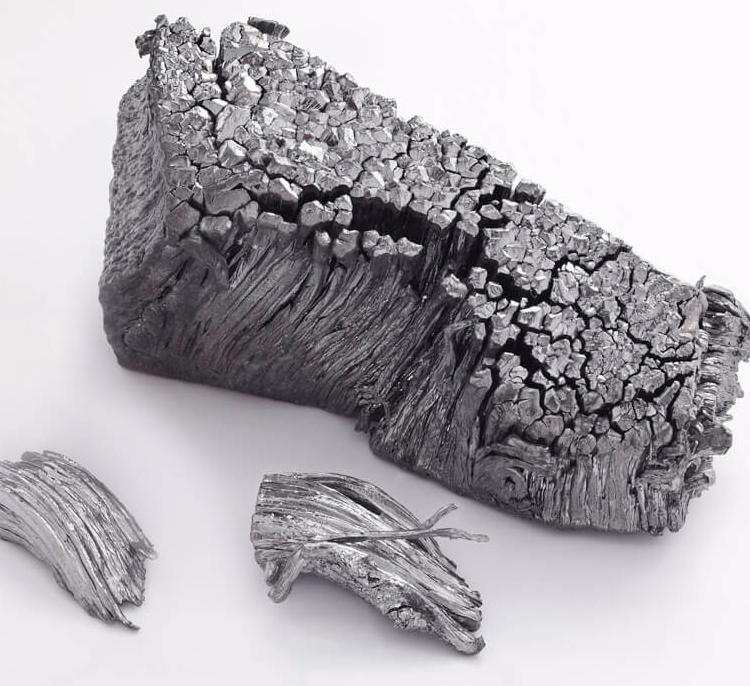

Тулий
Ту́лий (химический символ — Tm, от лат. Thulium) — химический элемент 3-й группы (по устаревшей классификации — побочной подгруппы третьей группы, IIIB) шестого периода периодической системы химических элементов Д. И. Менделеева с атомным номером 69.Относится к семейству лантаноидов.Простое вещество тулий — это легкообрабатываемый редкоземельный металл серебристо-белого цвета.

Открыт в 1879 г. шведским химиком П. Клеве в виде оксида («тулиевой земли») и назван им от древнегреческого наименования Скандинавии – Θούλη.
Оксид Tm2O3 получают из монацита путём ионообменной сорбции и осаждения, металлический тулий – кальциетермией TmF3; мировое производство Tm2O3 около 50 т/год. Применяют как компонент лазеров, ферритов, источников синего и микроволнового излучения, 170Tm (период полураспада Т1/2 128,6 сут) – источник β-излучения в портативных рентгеновских установках.